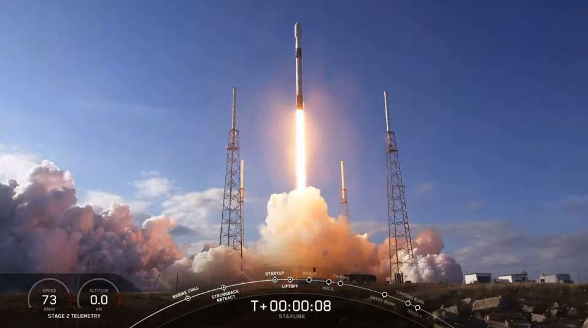
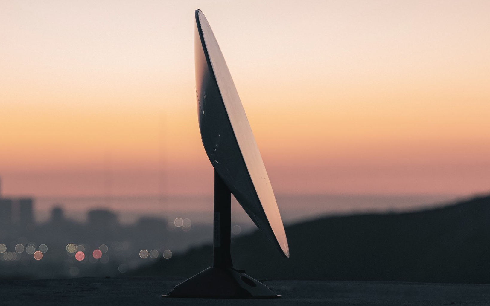

Abstract
Starlink is planned to be a large network of 12,000 low-orbit satellites that provide high-speed and low latency internet globally, regardless of infrastructure or terrain. Its elegant design allows it to be produced and transported to its desired locations easily, with preventative measures for various obstacles the satellites could encounter. The technology onboard each satellite makes it fully capable of powering itself, transferring information at remarkably high speeds, and de-orbit safely to Earth once it has completed its functional lifespan. As the project currently stands, it is fairly successful, providing very highquality internet connections at an affordable rate, with more expansions being added to the constellation of satellites regularly. Further information gathered and research done helped us understand Starlink’s inner workings and what the future could hold for this project.
Outline of the topic is as follows:
Introduction
Since the inception of the internet for public use, the internet has rapidly become a global commodity. Giving its users global access to data and communication, we have witnessed an unprecedented surge in its ever-growing demand. Despite being so vital to our daily lives, it is still not readily available to a large part of the global population. However, this dream may soon be our reality. SpaceX is a private American company founded by Elon Musk in 2002 that specializes in aerospace manufacturing and transportation. Its ultimate goal is to enhance space exploration. Having achieved many great feats and accomplishments since its foundation, such as creating reusable rocket launch systems, sending an object to orbit the sun, and collaborating with NASA to send astronauts into space, in January 2015, SpaceX announced the development of Starlink, its next major project that aims to provide quality global internet services to anyone, anywhere, anytime, at affordable rates. Go back.
What is Starlink?
Starlink is a manmade constellation of satellites that aims to provide high-speed internet all over Earth, especially in remote areas like deserts, jungles, mountains, etc., where it is hard to establish strong internet infrastructures. It consists of thousands of low-orbit satellites, that work in conjunction with transceivers placed on the ground to deliver high-speed internet no matter where you are. This communication satellite network uses lasers to communicate with other satellites. It transmits data in the form of light pulses which are then converted to electric signals by the receiving satellite. One of the reasons why Starlink is able to provide high speed internet is because light does not have the same speed in all mediums. It travels faster in vacuum than in air or any other medium. Compared to fiber optic cables on Earth, these satellites can send and receive data at a rate 1.47 times faster. This allows the Starlink satellites to have reduced latency time as opposed to other internet services and provides greater speed and connectivity. In a modern world where time is money, this groundbreaking technology will prove to be quite lucrative. Go back.
Testing and Launching
SpaceX Launches Fourth Starlink Mission As Its Mega Constellation Continues To Grow Rapidly
Source: SpaceX’s Starlink Mission Press Kit
The initial development for the Starlink project began in 2015. The first prototype test-flights for the satellites were carried out in February 2018. The two prototype satellites called Tintin A and Tintin B, allowed SpaceX to test and refine their satellite design. In regards to that, the first operational satellite launch was executed in May 2019. Initially only 60 satellites, which were part of the whole mega-constellation broadband, were sent out into space using the company’s Falcon 9 rockets, marking the start of their ambitious project. According to the SpaceX team, at least 420 satellites are required to achieve minor coverage at key locations, like North America and Canada, and 1600 to achieve moderate functionality which is aimed to be deployed by as soon as early 2022. At the time of writing, 895 satellites have been launched into orbit around Earth. 60 satellites, stacked on top of each other, are launched at a single time and these launches are taking place as often as every 2 weeks.
SpaceX plans to launch a total 12,000 number of satellites to complete its whole project after they received the permission to launch all 12,000 by the US Federal Communications Commission (FCC). However, we could see SpaceX launching a massive total of as many as 42,000 satellites in the future! These other satellites could be sold to the military, or for science and research purposes. The total cost for this whole project is estimated to be around $10 billion USD. The first 12,000 satellites are planned to be launched in 3 different categories that have different orbital paths:
| Phase | Satellite type(s) | Orbital Shells (km) |
Angle of inclination (degrees) |
Number of Satellites |
|---|---|---|---|---|
| Phase 1 | v0.9 and v1.0 | 550 | 53.0 | 1584 |
| 1100 | 53.8 | 1600 | ||
| 1325 | 70.0 | 400 | ||
| 1130 | 74.0 | 374 | ||
| 1275 | 81.0 | 450 | ||
| Phase 2 | Ku- and Ka- band | 335.9 | 42.0 | 2493 |
| 340.8 | 48.0 | 2478 | ||
| 345.6 | 53.0 | 2547 | ||
| Phase 3 | V-band | 340 | 97.6 | 7500 |
SpaceX is in the process of developing a superior method of space transportation with the ”Starship”. It is designed for travel to and from Mars, and to be reusable, but has an additional purpose of transporting Starlink satellites. The Falcon 9 has a carrying capacity of 60 satellites, while the Starship will have a capacity of 400 satellites, though it has not been used for such yet, as it is still in development and testing. It will also be used for moon missions. It is planned that it will successfully land on the moon by 2022. Go back.
What are the satellites like?
All the Starlink satellites are designed and manufactured at SpaceX’s facility in Redmond, Washington. They feature a very compact and flat design allowing them to be stacked on top of each other to be easily transported into space. Each of the satellite weighs about 260kg (573 pounds). A single satellite consists of 5 laser antennas that it uses to communicate with other satellites at a very high speed. It consist of many other parts directly integrated into it; efficient ion thrusters that utilize Krypton atoms for propulsion to orbit, de-orbit and move around in space; singular solar arrays that harness the sun’s energy for power; navigation sensors that helps the satellite maintain precise pathing; gyroscopes and built-in debris tracking system to navigate its orbit and avoid any collisions with other satellites. When a satellite completes its service life, they can use the same ion thrusters and altitude controls to de-orbit safely back to Earth. Go back.
Planned placement of the Starlink satellites relative to Earth’s surface
Source: SpaceX’s Starlink Mission Press Kit
How do they work?
SpaceX’s first phase of about 1,584 satellites will occupy 24 orbital planes. 66 satellites are included in 1 plane, each of them inclined at an angle of 53 degrees. Each satellite has a cone beam with a wide view of 83 degrees that gives them a coverage of about 500km square of circular area radius. At only a nominal altitude of 550 km, this gives them an edge over all the other internet services by having a latency time of 3.6 milliseconds. What this essentially means is that a satellite can send and receive data packets from Earth at the fraction of a second, approximately 0.0036 seconds. For comparison, geo-stationary satellites are situated at a height of 35,790km from Earth and have a latency of 260ms. However, due to their small altitude, they do have a minimal latency time, but this also reduces their coverage area. Initially, these Starlink satellites were planned to be orbited at 1,110 km, giving them a coverage radius of about 1,060km and a latency time of 8.6ms. Lowering of a satellite, therefore, reduces both the coverage area and the latency time. That is why, in order to provide a worldwide communication, Starlink needs to deploy about 12,000 satellites in total. Once data has been transmitted to a Starlink satellite, it uses its laser antennas to communicate with the other satellites that are part of the mega-constellation. Go back.
Pricing and Speed
As of September 9, 2020, various benchmarks from multiple sources confirmed having latency of less than 20 milliseconds, download rates around 102 Megabits per second (Mbps), and upload rates around 41 Mbps. Although these rates are about even to that of average internet speeds provided by networks on the ground, this is a good sign as Starlink is still only in its early days. These rates will improve as more and more satellites are added to the network and as SpaceX continues to refine the technology behind Starlink. Starlink is currently only providing service to a few thousand people in select regions as an open beta test. The price for the system that it requires to operate is a $499 USD upfront for the setup kit, and an ongoing price of $99 USD per month. It is likely that these prices will change as Starlink develops Go back.
Availability
 Starlink's small-sized transmitter
Source: Teslarati
Once all 12,000 satellites are launched, any subscriber could access the internet via Starlink from virtually anywhere. At the moment, with the limited open beta program Starlink is offering, it is only providing service to areas in the northern United States and southern Canada. In order to connect to the internet, customers will have to purchase the Starlink transmitter, developed by SpaceX themselves. These transmitters are relatively small devices. To establish the connection with the overhead Starlink satellites, the transmitters have to be plugged into a socket and the antenna aimed at the sky. No configuration, installation or technical expertise of any sorts is required, allowing the layman to use this system with ease. To the satellites, even sending and receiving from transmitters moving at a rapid speed is little issue. So a person will be able to stay connected to the internet despite being on the move, as long as they have the small transmitter device nearby. Go back.
Controversies faced by Starlink
Source: National Science Foundation’s Optical-Infrared Astronomy Research Laboratory
As impressive and innovative a project as Starlink is, it has also faced some controversy. One of the biggest issues that Starlink experienced was that, despite its limited launch and operational completion, it had significantly impacted the field of astronomy in some regions. Early on in its testing, one of the major issues pointed out by experts were that the Starlink satellites were too bright in the night sky. The satellites were being seen as bright spots in low-exposure pictures, and as long white streaks on high-exposure pictures, ruining the pictures taken. This was due to the satellites each having solar panels on them, which would not only power the satellites, but would also reflect some light back to the Earth, ultimately resulting in a problem.
The other significant issue was that the satellites utilized a big part of the radio wave frequency band. This would result in radio satellite dishes being unable to utilize those radio wave frequencies for the purpose of mapping out the universe and what it was like in its early days. A minor controversy that arose was in regards to the Starlink satellites becoming space debris when their serviceable lifetime was complete. However, that is not to say that these issues lasted. When the issue of the satellites being too bright was initially brought up, SpaceX immediately took the issue up. They worked on lowering the reflectivity of the satellites and angle of the solar panels so as to prevent the bright lights visible from Earth. They are currently working on painting the satellites a material that has a very low albedo (or reflectivity) so that the satellites reflect as little light as possible. SpaceX also promised to limit the range of frequencies they would utilize for the Starlink network to not become a hurdle for astronomy and other fields of work. As for the issue of the satellites remaining in their low orbit paths and becoming space debris, this will not occur as the thruster system on the satellites is fully capable of safely landing each satellite back down to Earth after a satellite has completed its lifetime service. Go back.
Conclusion
Starlink could very soon become a part of all of our lives. It is projected to be mostly operational around mid-2022, providing coverage and reliable internet connections to a large portion of the world. It will significantly improve the capabilities of information transfer due to the extensive reach and networking capabilities. It could entirely revolutionize broadband services and connections. The Starlink system will be able to provide internet connections regardless of where in the world someone is located, if they are moving rapidly in a vehicle, or are at home in a remote area. Go back.